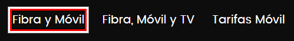

Focus 2.4.7 – (Focus Visible)
Ir a la versión en Castellano
Comments:
- This bookmarklet adds a visible focus outline (red, black, and white) to help verify functionality when the native focus is not visible.
- It can be toggled on and off by clicking the bookmarklet. An alert message will notify whether it is Enabled or Disabled.
- While it forces a visible focus, it may have display issues on certain pages or with hidden elements.

Update: Single version.
Focus (2.4.7)
You can also right-click and choose "Bookmark this link" if you're on mobile or unable to drag it.
More information: 2.4.7 Focus visible
Link to other autor Bookmarklets:
Feedback and Issues:
If you have feedback, suggestions, or encounter any errors, please feel free to contact me at: emilianomontani@gmail.com
The code can be modified and improved. If you create any enhancements, I’d be happy to try them out!
I hope this tool is useful in your daily work! Thank you very much for your collaboration. :)